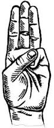

PROMISE
LAW
MOTTO
PRAYER
FLAG SONG
SALUTE
SIGN
BACK
THE BHARATH SCOUT AND GUIDE
SCOUT GUIDE SIGN
*The Scout/Guide sign is given at the time of investiture.
*The uphelded 3 fingers represents the 3 parts of the promise.
*The thump covering the little finger stands for protecting the weaker people
